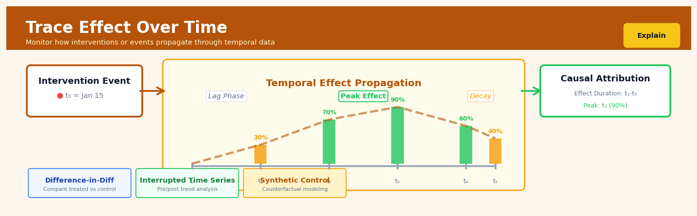

Trace Effect Over Time#


The most common mistake with trace effect analysis is confusing correlation timing with causation. Just because metric X changes two weeks after intervention Y doesn't mean Y caused X—you need to establish counterfactual baselines and rule out confounding events that happened in that same window. Always overlay your effect curves with external event timelines and control group trajectories to separate signal from coincidence.
The 60-Second Version#
What it does: Trace Effect Over Time measures whether a change you made (like a new policy or marketing campaign) had different impacts at different points in time after you introduced it.
When to use it: You’ve implemented an intervention and need to know not just if it worked, but when the impact appeared, how long it lasted, and whether it grew stronger or faded away.
What you get back: A timeline showing the size and reliability of your intervention’s effect at each time point, so you can identify optimal measurement windows, detect delayed responses, and avoid premature conclusions.
At a Glance
Difficulty |
Advanced |
Typical runtime |
Minutes on 100K rows |
What you bring |
Longitudinal data with treatment timing, outcomes measured repeatedly, and pre-treatment periods |
What you get |
Time-indexed effect estimates with confidence intervals |
Heuristix bucket |
Explain — Causal Analysis & Interpretation |
A single aggregate effect estimate can mask critical dynamics: what appears ineffective at week one may be transformative by week eight.
Learning Objectives#
After reading this chapter, a business user will be able to:
Identify whether a business problem requires tracking effect evolution over time rather than a single average treatment effect, distinguishing scenarios like delayed product impacts, wearing-off promotions, or time-varying policy effects.
Read and explain time-varying treatment effect plots to stakeholders, articulating whether an intervention’s impact is growing, fading, stable, or reversing at different time horizons.
Decide the optimal timing for scaling, modifying, or discontinuing an intervention based on when its causal effect peaks, plateaus, or becomes statistically indistinguishable from zero.
After reading this chapter, a data scientist will be able to:
Implement Trace Effect Over Time analysis by selecting appropriate estimators for the data structure (repeated cross-sections vs. panel data), accounting for time-varying confounders, and handling censoring or attrition in longitudinal observations.
Configure temporal binning windows, bandwidth parameters for local polynomial smoothing, and multiple testing corrections while understanding the bias-variance trade-offs that affect effect trajectory precision.
Validate temporal treatment effect estimates by conducting placebo tests on pre-treatment periods, checking for violation of parallel trends or no anticipation assumptions, and diagnosing spurious time patterns caused by seasonal confounding or regression to the mean.
Overview#
Trace Effect Over Time is a dynamic causal inference technique that quantifies how the magnitude, direction, and statistical significance of a treatment or intervention effect evolves across temporal observations. It belongs to the family of heterogeneous treatment effect methods, specifically those focused on temporal effect modification, and draws on methodologies from panel data econometrics, survival analysis, and longitudinal causal inference. The core purpose is to move beyond a single aggregate treatment effect estimate and instead characterise the full trajectory of causal impact—revealing whether effects are immediate or delayed, transient or persistent, accumulating or decaying.
When to Use This#
Use this when:
Evaluating marketing campaign persistence: You need to understand whether a promotional intervention produces immediate lift that decays, or whether effects compound over subsequent purchase cycles.
Assessing treatment durability in clinical studies: A pharmaceutical intervention may show initial efficacy that wanes, or conversely, delayed benefits that emerge only after sustained treatment.
Measuring policy impact trajectories: Government or organisational policy changes often have lagged effects; understanding the temporal profile is essential for cost-benefit analysis.
Diagnosing intervention timing: You suspect that the timing of when an effect manifests is as important as its magnitude—for instance, whether a training programme shows returns immediately or only after a consolidation period.
Comparing effect half-lives: Multiple interventions may produce similar cumulative effects but with radically different temporal profiles; you need to distinguish fast-acting but transient treatments from slow-building but durable ones.
Detecting effect reversal or rebound: Some interventions produce initial positive effects followed by negative rebound effects (or vice versa); a single aggregate estimate would obscure this.
Planning intervention withdrawal or renewal: Before discontinuing a treatment, you need evidence on whether effects persist after cessation or require continuous re-application.
Do NOT use this when:
You have purely cross-sectional data: This method requires repeated observations over time for the same or comparable units.
The treatment is not time-stamped: If you cannot identify when treatment occurred relative to outcome measurements, temporal effect tracing is not feasible.
Sample size per time period is insufficient: Estimating separate effects at each time point requires adequate statistical power at each point; sparse data will produce unstable estimates.
Questions This Answers#
Understanding Impact Timing and Duration#
Is our new pricing strategy actually working, or is it too early to tell?
When did customers who received the onboarding email campaign actually start converting — immediately or weeks later?
How long does the sales boost from our quarterly promotions typically last before returning to baseline?
Did the productivity gains from the new software rollout fade after the initial training period, or are they sustained?
Are we seeing delayed effects from our brand awareness campaign that wouldn’t show up in a standard 30-day attribution window?
Comparing Program Performance Across Time#
Which hiring cohort performed better in their first year — the January intake or the September intake?
Did our customer retention initiative work better in the first 90 days or after six months?
Is the quality improvement from switching suppliers immediate, or does it take a few production cycles to materialize?
Between the two store redesigns we tested, which one shows more durable revenue impact after the novelty wears off?
Optimizing Investment and Resource Allocation#
Should we extend this pilot program for another quarter, or have we already captured all the benefits we’re going to see?
At what point does continuing this intervention stop being cost-effective based on diminishing returns?
If the treatment effect peaks at 60 days and then declines, should we implement this as a quarterly refresh rather than a permanent change?
When should we expect ROI from our employee wellness program — this fiscal year or next?
Is the revenue lift from our loyalty program growing over time as members become more engaged, or plateauing?
How It Works#
Imagine you’re a doctor prescribing a new blood pressure medication to a patient. The patient doesn’t just take one pill and magically reach the perfect blood pressure forever. Instead, you track their readings week by week: maybe nothing changes in week one (the drug is building up), pressure drops sharply in weeks two through four (peak effect), then gradually creeps back up a bit in weeks five and six (the body adapts). If you only measured once—say, at week three—you’d think the drug was a miracle. If you only measured at week six, you’d underestimate its power. Trace Effect Over Time is like being that careful doctor: it watches how a treatment’s impact unfolds across the entire timeline, capturing the rise, peak, fade, or persistence of the effect.
TRACE EFFECT OVER TIME VISUALIZATION
Treatment Applied Here ↓
Time: t₀ t₁ t₂ t₃ t₄ t₅ t₆
│ │ │ │ │ │ │
Treated: ●────●────●────●────●────●────●
│ │ ╱│ ╱│ ╱│ ╱│ │
│ │ ╱ │ ╱ │ ╱ │ ╱ │ │
Control: ○────○─○──○─○──○─○──○─○──○────○
Effect │ │ │ │ │ │ │
Size: ▁ ▂ ▅ █ ▆ ▄ ▃
Zero Small Med. Large Med. Small Small
RESULT: Effect trajectory over time
┌────────────────────────────────────┐
│ Time │ Effect │ Significance │
├────────┼──────────┼───────────────┤
│ t₁ │ +0.2 │ No │
│ t₂ │ +1.5 │ Yes │
│ t₃ │ +2.8 │ Yes │
│ t₄ │ +2.1 │ Yes │
│ t₅ │ +1.3 │ Yes │
│ t₆ │ +0.9 │ Marginal │
└────────┴──────────┴───────────────┘
Step 1: Establish the temporal observation points. First, the technique identifies all the time periods when outcomes were measured—daily, weekly, monthly, or whatever intervals your data provides. Each moment becomes a checkpoint where we’ll calculate a separate effect estimate.
Step 2: Align treated and control units at each time point. For every checkpoint, the method compares the treated group to a matched control group at that specific moment. This might use matching, weighting, or other balancing approaches to ensure the groups are comparable—like comparing patients of similar age and health status.
Step 3: Calculate the treatment effect at each moment. At time one, compute how much the outcome differs between treated and control. At time two, do the same calculation again. Repeat for every observation point. You’re building a sequence of effect estimates, one per time period.
Step 4: Track the pattern across the sequence. Now examine the series of effects you’ve calculated. Does the effect start at zero and grow? Does it spike immediately then decay? Does it remain constant? This trajectory tells the story of how the intervention’s impact evolves.
Step 5: Test for significance at each point. For each time-specific effect, assess whether it’s statistically meaningful or just noise. Some periods might show strong, reliable effects while others show weak or uncertain impacts. This reveals when the treatment truly matters.
Step 6: Visualize the temporal pattern. Plot the effect estimates across time, showing both magnitude and uncertainty. The resulting graph makes it immediately clear whether you’re seeing delayed activation, quick fade-out, sustained impact, or any other temporal signature.
The key insight: A single average effect conceals the story—tracing effects across time reveals whether interventions take time to work, lose potency, or create lasting change, fundamentally altering how we interpret causal claims.
The Intuition#
Imagine you administer a medication to a patient and want to understand its effect on blood pressure. A naïve approach would measure blood pressure once—say, one week after administration—and compare it to a control group. But this single snapshot misses crucial information. Does the drug take effect immediately, or does it require several days to reach therapeutic levels? Does the effect plateau, or does it continue strengthening? Does the benefit persist after the drug clears the system, or does blood pressure rebound?
Trace Effect Over Time addresses exactly this limitation. Rather than collapsing all post-treatment observations into a single estimate, it produces a curve of treatment effects indexed by time since treatment. Each point on this curve answers the question: “At this specific point in time relative to treatment, what is the causal effect?” This transforms a single number into a rich temporal narrative.
The analogy extends naturally to business contexts. Consider a retailer who sends a discount coupon to a subset of customers. The immediate effect might be a spike in purchases as customers redeem the coupon. But what happens next week? Do customers who received the coupon continue purchasing at elevated rates (habit formation), return to baseline (transient effect), or actually purchase less than they otherwise would (pull-forward effect where future purchases were simply accelerated)? These three scenarios have identical immediate effects but radically different business implications. Trace Effect Over Time distinguishes between them.
The key conceptual insight is that treatment effects are not static constants but dynamic functions. Just as a physicist would not characterise a moving object by a single position measurement, a data scientist should not characterise a temporal intervention by a single aggregate effect. The effect trajectory is the estimand of interest, and this method provides the machinery to estimate it rigorously.
The Mathematics#
Problem Setup and Notation#
Consider a panel of \(N\) units observed over \(T\) time periods. Let \(Y_{it}\) denote the outcome for unit \(i\) at time \(t\). Define a binary treatment indicator \(D_{it} \in \{0, 1\}\) where \(D_{it} = 1\) if unit \(i\) is under treatment at time \(t\). For many applications, treatment is absorbing: once \(D_{it} = 1\), we have \(D_{is} = 1\) for all \(s \geq t\). Define the treatment adoption time as:
with \(E_i = \infty\) for never-treated units. We define the event time or relative time as:
which measures periods relative to treatment adoption. Negative values indicate pre-treatment periods; \(k = 0\) is the treatment period; positive values indicate post-treatment periods.
Potential Outcomes Framework#
Under the potential outcomes framework, let \(Y_{it}(0)\) denote the outcome unit \(i\) would experience at time \(t\) absent treatment, and \(Y_{it}(1, k)\) denote the outcome under treatment where \(k\) represents time since treatment began. The observed outcome satisfies:
The treatment effect at event time \(k\) is:
This is the average treatment effect on the treated (ATT) at event time \(k\).
Identification Assumptions#
Assumption 1 (Parallel Trends): In the absence of treatment, treated and control units would follow parallel outcome trajectories:
Assumption 2 (No Anticipation): Treatment has no effect before it occurs:
Assumption 3 (Limited Treatment Effect Heterogeneity): The effect at event time \(k\) does not vary arbitrarily with calendar time \(t\), or such variation is explicitly modelled.
Event Study Regression Specification#
The standard implementation uses a two-way fixed effects regression with event-time indicators. Define indicator variables \(\mathbf{1}\{t - E_i = k\}\) for each relative time \(k\). The regression model is:
where:
\(\alpha_i\) are unit fixed effects controlling for time-invariant unit heterogeneity
\(\lambda_t\) are time fixed effects controlling for common temporal shocks
\(\tau_k\) are the event-time-specific treatment effects
The period \(k = -1\) (one period before treatment) is omitted as the reference category
The coefficients \(\{\tau_k\}\) trace out the treatment effect over time. Pre-treatment coefficients (\(k < -1\)) serve as a placebo test: under valid identification, \(\tau_k \approx 0\) for \(k < 0\).
Estimation#
Under standard regularity conditions, ordinary least squares (OLS) consistently estimates \(\{\tau_k\}\):
where \(\mathbf{M}\) is the residual maker that partials out unit and time fixed effects, and \(\mathbf{X}\) contains the event-time indicators.
Standard errors must account for serial correlation within units. Cluster-robust standard errors at the unit level are standard:
Heterogeneity-Robust Estimation#
Recent econometric research (Goodman-Bacon, 2021; Callaway & Sant’Anna, 2021; Sun & Abraham, 2021) demonstrates that with staggered treatment adoption and heterogeneous effects, the standard TWFE estimator can produce biased estimates due to “forbidden comparisons”—using already-treated units as controls.
The Callaway-Sant’Anna estimator addresses this by computing group-time average treatment effects:
where \(G = g\) indicates units treated in period \(g\), and \(C = 1\) indicates never-treated or not-yet-treated controls. These are then aggregated to event-time effects:
with weights \(w_g\) proportional to group sizes.
Edge Cases and Degenerate Conditions#
All units treated simultaneously: Event-time effects are not separately identified from time effects; the model collapses to a simple pre-post design.
No never-treated units with late adopters: Identification relies on appropriate control groups; without them, pre-treatment parallel trends cannot be tested.
Unbalanced event windows: Not all units are observed for the same relative time periods; endpoint effects may be estimated from small, unrepresentative samples.
Time-varying confounders: If treatment timing is correlated with time-varying factors that also affect outcomes, parallel trends fails.
Understanding the Mathematics#
The Time-Varying Treatment Effect#
The equation:
Read it aloud:
“The treatment effect at time t equals the expected outcome at time t for treated units minus the expected outcome at time t for untreated units.”
What each symbol means:
\(\tau(t)\) = the causal effect size at a specific time point t
\(E[\cdot]\) = expected value (the average we’d see across many observations)
\(Y_i(t)\) = the outcome for unit i measured at time t
\(D_i = 1\) = units that received the treatment
\(D_i = 0\) = units that did not receive the treatment
A concrete numerical example:
A retail chain launches a loyalty program. Six months later (\(t = 6\)), customers who joined (\(D = 1\)) spend an average of \(340 per month. Customers who didn't join (\)D = 0\() spend \)280 per month. The treatment effect is \(\tau(6) = 340 - 280 = 60\) dollars. At twelve months, these numbers might be \(390 and \)310, making \(\tau(12) = 80\) dollars—the effect is growing over time.
Why this equation matters:
Without tracking \(\tau(t)\) across multiple time points, you’d assume a program’s impact is constant when it might actually be accelerating, fading, or reversing—leading to premature termination of successful interventions or continuation of ineffective ones.
The Difference-in-Differences Estimator#
The equation:
Read it aloud:
“The DiD estimate equals the change in outcomes for the treatment group from baseline to time t, minus the change in outcomes for the control group over that same period.”
What each symbol means:
\(\hat{\tau}_{DiD}(t)\) = our estimated treatment effect at time t, removing pre-existing trends
\(Y_{1,t}\) = outcome for treated group at time t
\(Y_{1,0}\) = outcome for treated group at baseline (before treatment)
\(Y_{0,t}\) = outcome for control group at time t
\(Y_{0,0}\) = outcome for control group at baseline
A concrete numerical example:
A manufacturing plant implements new safety training. Before training, the treated plant had 45 incidents annually; the control plant had 38. Six months post-training, the treated plant has 28 incidents; control has 35. The DiD estimate is: \(\hat{\tau}_{DiD}(6) = (28 - 45) - (35 - 38) = -17 - (-3) = -14\) incidents. The treated plant improved by 17, but we subtract the control’s 3-incident improvement to isolate the training effect: 14 fewer incidents.
Why this equation matters:
Simple before-after comparisons confuse natural trends with treatment effects; DiD removes time trends that would have occurred anyway, isolating the genuine causal impact.
The Panel Regression Model#
The equation:
Read it aloud:
“The outcome for unit i at time t equals a unit-specific baseline, plus a time-period effect, plus a time-varying treatment coefficient multiplied by treatment status, plus random error.”
What each symbol means:
\(Y_{it}\) = outcome for unit i at time t
\(\alpha_i\) = fixed effect for unit i (captures unchanging characteristics)
\(\lambda_t\) = time fixed effect (captures period-specific shocks affecting everyone)
\(\beta(t)\) = the treatment effect at time t (what we’re trying to trace)
\(D_{it}\) = 1 if unit i is treated at time t, 0 otherwise
\(\epsilon_{it}\) = random noise
A concrete numerical example:
Hospital A has a baseline readmission rate (\(\alpha_A\)) of 12%. During flu season (\(\lambda_{winter}\)), all hospitals see +3% readmissions. Hospital A adopts a discharge protocol at month 6. The treatment effect starts at \(\beta(6) = -2\%\) and grows to \(\beta(12) = -4.5\%\). At month 12 during winter: \(Y_{A,12} = 12 + 3 + (-4.5) \cdot 1 + 0.5 = 11\%\). The protocol saved 4.5 percentage points despite seasonal pressures.
Why this equation matters:
This framework simultaneously controls for unit-specific confounders and time shocks while estimating how treatment effects evolve—something simple regressions cannot do.
The Big Picture#
The mathematics of Trace Effect Over Time exists to solve a problem simple causal inference ignores: effects change. A single treatment effect estimate assumes impact is frozen in time, but real interventions unfold dynamically—employee training takes months to manifest, marketing campaigns decay as novelty fades, medication effects plateau. These equations provide a rigorous framework to separate genuine time-varying causal effects from pre-existing differences between groups, common time trends, and random fluctuations. We use panel methods and difference-in-differences rather than simple comparisons because they remove confounding from stable unit characteristics and shared temporal shocks. At its core, this mathematics answers one question with precision: how does the causal story evolve across the clock, not just at a single snapshot?
Python Implementation#
import numpy as np
import pandas as pd
import statsmodels.api as sm
import matplotlib.pyplot as plt
from scipy import stats
# =============================================================================
# Generate Realistic Synthetic Panel Data
# =============================================================================
np.random.seed(42)
n_units = 200
n_periods = 20
# Create panel structure
unit_ids = np.repeat(np.arange(n_units), n_periods)
time_periods = np.tile(np.arange(n_periods), n_units)
# Assign staggered treatment timing
# Some units never treated, others treated at different times
treatment_timing = np.random.choice(
[np.inf, 8, 10, 12, 14], # inf = never treated
size=n_units,
p=[0.2, 0.2, 0.2, 0.2, 0.2]
)
# Unit fixed effects (time-invariant heterogeneity)
unit_fe = np.random.normal(0, 2, n_units)
# Time fixed effects (common shocks)
time_fe = 0.3 * np.arange(n_periods) + np.random.normal(0, 0.5, n_periods)
# Define true dynamic treatment effects
# Effect starts at 0, ramps up, then partially decays
def true_effect(k):
"""True treatment effect at event time k."""
if k < 0:
return 0 # No anticipation
elif k <= 3:
return 2.0 * (k + 1) # Ramp up: 2, 4, 6, 8
else:
return 8.0 * np.exp(-0.15 * (k - 3)) # Exponential decay
# Build outcome variable
outcomes = []
event_times = []
for i in range(n_units):
for t in range(n_periods):
# Unit and time effects
y = unit_fe[i] + time_fe[t]
# Treatment effect (if treated)
if treatment_timing[i] <= t:
k = int(t - treatment_timing[i])
y += true_effect(k)
# Idiosyncratic error
y += np.random.normal(0, 1.5)
outcomes.append(y)
# Record event time
if treatment_timing[i] == np.inf:
event_times.append(np.nan)
else:
event_times.append(t - treatment_timing[i])
# Construct DataFrame
df = pd.DataFrame({
'unit': unit_ids,
'time': time_periods,
'outcome': outcomes,
'event_time': event_times,
'treatment_period': np.repeat(treatment_timing, n_periods),
'treated': np.repeat(treatment_timing, n_periods) <= time_periods
})
print("Panel data shape:", df.shape)
print("\nTreatment timing distribution:")
print(df.groupby('unit')['treatment_period'].first().value_counts())
# =============================================================================
# Method 1: Standard Event Study Regression (TWFE)
# =============================================================================
# Create event-time dummies
# Bin endpoints to avoid small-sample issues
min_k, max_k = -5, 8 # Window of interest
df['event_time_binned'] = df['event_time'].clip(lower=min_k, upper=max_k)
# Create dummy variables, excluding k=-1 as reference
event_dummies = pd.get_dummies(
df['event_time_binned'].dropna(),
prefix='k',
dtype=float
)
event_dummies = event_dummies.drop('k_-1.0', axis=1, errors='ignore')
# Align indices and merge
df_analysis = df.dropna(subset=['event_time']).copy()
for col in event_dummies.columns:
df_analysis[col] = event_dummies[col].values
# Also include never-treated units
df_never_treated = df[df['treatment_period'] == np.inf].copy()
for col in event_dummies.columns:
df_never_treated[col] = 0.0
df_combined = pd.concat([df_analysis, df_never_treated], ignore_index=True)
# Add fixed effect dummies
unit_dummies = pd.get_dummies(df_combined['unit'], prefix='unit', drop_first=True, dtype=float)
time_dummies = pd.get_dummies(df_combined['time'], prefix='time', drop_first=True, dtype=float)
# Prepare regression matrix
event_cols = [c for c in df_combined.columns if c.startswith('k_')]
X = pd.concat([
df_combined[event_cols],
unit_dummies,
time_dummies
], axis=1)
X = sm.add_constant(X)
y = df_combined['outcome']
# Fit OLS with clustered standard errors
model = sm.OLS(y, X).fit(cov_type='cluster', cov_kwds={'groups': df_combined['unit']})
# Extract event-time coefficients
event_coefs = {}
for col in event_cols:
k = float(col.split('_')[1])
event_coefs[k] = {
'estimate': model.params[col],
'se': model.bse[col],
'ci_lower': model.conf_int().loc[col, 0],
'ci_upper': model.conf_int().loc[col, 1]
}
# Add reference period
event_coefs[-1.0] = {'estimate': 0, 'se': 0, 'ci_lower': 0, 'ci_upper': 0}
# Sort and display results
results_df = pd.DataFrame(event_coefs).T.sort_index()
results_df.index.name = 'event_time'
print("\n=== Event Study Estimates (TWFE) ===")
print(results_df.round(3))
# =============================================================================
## Visualisations


## Using This in Heuristix
### What You'll Need
The **Trace Effect Over Time** node expects panel data—repeated observations of the same units across time. You'll need:
- **Unit identifier** (text or numeric): Individual, customer, region, etc.
- **Time variable** (date, datetime, or sequential integer): When each observation occurred
- **Treatment indicator** (binary 0/1): Whether the unit received treatment at that time
- **Outcome variable** (numeric): The metric you're measuring
- **Covariates** (optional, numeric or categorical): Control variables for adjustment
**Example input:**
| customer_id | week | treated | revenue | segment |
|-------------|------|---------|---------|---------|
| C001 | 1 | 0 | 245 | premium |
| C001 | 2 | 1 | 290 | premium |
| C001 | 3 | 1 | 310 | premium |
The node expects your data in **long format** with one row per unit-time combination. If you have wide data (one row per unit, columns for each time period), use the **Reshape** node first.
### Configuration Parameters
| Parameter | What It Controls | Default | When to Adjust |
|-----------|-----------------|---------|----------------|
| **Unit ID Column** | Which column identifies your units | — | Required. Choose your entity identifier. |
| **Time Column** | Which column contains time periods | — | Required. Must be sortable chronologically. |
| **Treatment Column** | Binary indicator of treatment status | — | Required. Use 1 for treated, 0 for control. |
| **Outcome Column** | The metric you're tracking | — | Required. Should be numeric and continuous. |
| **Covariates** | Variables to adjust for confounding | None | Add pre-treatment characteristics that affect both treatment and outcome. |
| **Pre-treatment Periods** | How many periods before treatment to include | 3 | Increase to 5–10 if you want stronger parallel trends validation. |
| **Post-treatment Periods** | How many periods after treatment to track | 12 | Extend if effects might emerge slowly (e.g., 24 weeks for habit formation). |
| **Estimation Method** | Statistical approach (DiD, matching, regression) | Difference-in-Differences | Use matching if parallel trends seem questionable; regression for many covariates. |
| **Confidence Level** | Width of confidence intervals | 95% | Lower to 90% for exploratory work; keep at 95% for formal reporting. |
| **Clustering Variable** | Unit to cluster standard errors by | Unit ID | Change if you have hierarchical structure (e.g., cluster by store, not transaction). |
### What You'll Get Back
The node produces:
**Output dataset** with new columns:
- `effect_estimate`: Treatment effect magnitude at each time period
- `std_error`: Standard error of the estimate
- `ci_lower` / `ci_upper`: Confidence interval bounds
- `p_value`: Statistical significance
- `relative_time`: Periods before/after treatment (negative = pre-treatment)
**Visualizations:**
- **Effect trajectory plot**: Line chart showing effect size over time with confidence bands—the central deliverable showing when effects appear and how they evolve
- **Event study plot**: Coefficient plot with pre-treatment placebo tests—validates your causal assumptions
- **Heatmap** (if multiple treatment groups): Effect magnitude by group and time
**Summary statistics:**
- Average pre-treatment effect (should be near zero)
- Peak effect magnitude and timing
- Cumulative effect over observation window
### Connecting Downstream
Typical next steps:
- **Filter** → Subset to statistically significant periods only
- **Calculate Field** → Compute cumulative effects or effect decay rates
- **Segment Analysis** → Split by customer cohort to find heterogeneous effects
- **Export** → Pull the trajectory plot directly into stakeholder presentations
### Quick Start: Standard Implementation
1. **Connect your panel dataset** with at least unit ID, time, treatment, and outcome columns
2. **Map required fields** in the configuration panel (the four required columns)
3. **Set your time windows**: 3–5 pre-treatment periods (to test assumptions) and however long you want to track effects
4. **Start with Difference-in-Differences** as your estimation method—it's most interpretable
5. **Review the event study plot first**—if pre-treatment effects aren't near zero, revisit your parallel trends assumption
6. **Examine the trajectory plot**—note when effects emerge, peak, and potentially fade
### Pro Tips
- **Always inspect pre-treatment estimates**: Non-zero effects before treatment indicate violated assumptions—consider matching or additional covariates
- **Use relative time, not calendar time**: Effects at "3 weeks post-treatment" are more interpretable than "effect in March" when treatment timing varies
- **Don't over-interpret early noise**: The first 1–2 periods post-treatment often show high variance; look for consistent patterns
- **Check for balance drift**: If treated and control groups diverge in covariates over time, add time-varying controls
- **Compare effect stability**: Confidence intervals that widen dramatically over time suggest you're losing sample (attrition) or effects are becoming noisier
## Config Recipes
### Recipe 1: Quick Exploration
**When to use:** First-pass analysis on a new dataset to check if any temporal effects exist before investing in rigorous modeling.
**Settings:**
| Parameter | Value | Why |
|-----------|-------|-----|
| `time_window` | `"auto"` | Let algorithm detect natural breakpoints |
| `min_obs_per_period` | `30` | Balance granularity with stability |
| `bootstrap_iterations` | `100` | Adequate for directional confidence intervals |
| `effect_estimator` | `"difference_in_means"` | Fastest, no model fitting overhead |
| `multiple_testing_correction` | `None` | Skip initially to see raw patterns |
| `parallel_backend` | `"threading"` | Reduces setup overhead for quick runs |
**What you get:** Rapid visualization of effect trajectory with approximate confidence bands, sufficient to identify whether effects grow, decay, or stabilize.
**Trade-off:** Confidence intervals are wider and p-values are uncorrected, making this unsuitable for publication or deployment decisions.
---
### Recipe 2: Production-Grade Inference
**When to use:** Final analysis for regulatory submission, academic publication, or high-stakes business decisions requiring defensible causal claims.
**Settings:**
| Parameter | Value | Why |
|-----------|-------|-----|
| `time_window` | `"calendar_month"` | Reproducible, stakeholder-interpretable periods |
| `min_obs_per_period` | `100` | Ensures sufficient power per time slice |
| `bootstrap_iterations` | `5000` | Stabilizes confidence interval boundaries |
| `effect_estimator` | `"doubly_robust"` | Guards against misspecification in either model |
| `multiple_testing_correction` | `"holm_bonferroni"` | Controls family-wise error rate conservatively |
| `covariate_balance_threshold` | `0.05` | Fails loudly if pre-treatment balance fails |
| `parallel_backend` | `"multiprocessing"` | Maximizes throughput for intensive computation |
**What you get:** Publication-ready estimates with conservative inference, complete with diagnostics proving covariate balance at each time point.
**Trade-off:** Runtime increases 20–50×; requires careful review of all diagnostic outputs before accepting results.
---
### Recipe 3: Policy Intervention with Known Lag
**When to use:** Evaluating interventions where domain knowledge suggests effects manifest only after a delay (e.g., training programs, infrastructure projects).
**Settings:**
| Parameter | Value | Why |
|-----------|-------|-----|
| `time_window` | `"week"` | Granular enough to pinpoint onset |
| `min_time_before_estimation` | `12` | Exclude first 3 months (domain-driven lag) |
| `effect_estimator` | `"synthetic_control"` | Handles single treated unit with donor pool |
| `trend_adjustment` | `"linear_detrend"` | Remove secular trends unrelated to treatment |
| `anticipation_window` | `4` | Account for 4 weeks of potential anticipatory behavior |
**What you get:** Effect trajectory that begins only after the plausible mechanism delay, avoiding premature null findings.
**Trade-off:** Requires strong domain priors; misspecifying the lag period can mask or fabricate effects.
---
### Recipe 4: Detecting Effect Fadeout in Habit Formation
**When to use:** Testing whether behavioral interventions (nudges, incentives, defaults) create lasting change or only temporary compliance that vanishes post-intervention.
**Settings:**
| Parameter | Value | Why |
|-----------|-------|-----|
| `time_window` | `"day"` | Capture fine-grained behavioral decay |
| `extend_post_period` | `90` | Observe 3 months beyond intervention end |
| `effect_estimator` | `"regression_discontinuity_in_time"` | Sharp contrast at intervention boundaries |
| `test_for_slope_change` | `True` | Distinguish level shifts from trajectory changes |
| `persistence_metric` | `"half_life"` | Quantify decay rate automatically |
**What you get:** Explicit measurement of how quickly effects dissipate, with half-life estimates for intervention durability.
**Trade-off:** Requires extended post-treatment observation; early termination of tracking produces misleading persistence claims.
## Business Applications
**Financial Services**
A mid-sized UK mortgage lender introduced a new credit scoring algorithm to reduce default rates but needed to understand whether risk predictions remained accurate over a loan's lifecycle. Trace Effect Over Time revealed that the new model performed 18% better than the legacy system in months 1–6 but showed no improvement after month 12, particularly for self-employed borrowers. This temporal insight enabled the bank to deploy a hybrid approach: new algorithm for early-stage monitoring, legacy rules for mature loans, ultimately reducing charge-offs by £2.3M annually while avoiding a costly full system replacement.
**Retail & E-commerce**
A fashion e-commerce platform with 1.8M SKUs redesigned its product recommendation engine and needed to measure long-term customer value impact, not just immediate click-through rates. By tracing the treatment effect across 12 months post-exposure, the data science team discovered that while initial conversion lifted 22%, the effect completely reversed by month 8 as customers became fatigued by the aggressive personalisation. The company recalibrated recommendation frequency, achieving sustained 14% basket size growth without the decay pattern.
**Healthcare & Life Sciences**
A regional hospital network launched a remote patient monitoring programme for diabetic patients and faced scepticism about whether benefits would persist beyond the initial behaviour change period. Trace Effect Over Time analysis tracked HbA1c levels across 24 months, showing that telehealth reduced levels by 0.9 percentage points in the first quarter, with effects stabilising at 0.6 points through month 18 before beginning to fade. This evidence secured £4.7M in continued funding and informed optimal re-engagement timing at the 15-month mark, before decay accelerated.
**Insurance**
A commercial property insurer piloted an IoT sensor programme to detect water leaks early but couldn't justify the £850 per-property hardware cost without understanding claim prevention over time. Temporal effect tracing revealed that 61% of the leak prevention benefit materialised in years 2–3, not year one, as the machine learning models improved with accumulated building-specific data. Armed with this trajectory evidence, the insurer restructured contracts to three-year minimums and expanded from 200 pilot properties to 12,000, projecting £18M in avoided claims.
**Manufacturing**
An automotive parts manufacturer implemented a predictive maintenance system across 47 production lines to reduce unplanned downtime. Trace Effect Over Time quantified that downtime fell 41% in the first quarter but regressed to only 12% improvement by month 9 as maintenance teams became complacent and overrode system alerts. This finding prompted a retraining protocol every six months and alert redesign, restoring performance to 35% sustained reduction and recovering approximately 340 production hours monthly.
**Logistics & Supply Chain**
A last-mile delivery company serving 23 European cities introduced dynamic routing optimisation but needed to isolate its impact from seasonal patterns and fleet expansion. By tracing the causal effect week-by-week over 18 months, analysts proved the algorithm cut average delivery time from 48 minutes to 34 minutes initially, with effects strengthening to 29 minutes by month 6 as drivers learned the system. This accumulating benefit pattern justified infrastructure investment in real-time traffic integration, further reducing times to 24 minutes.
**Marketing & Advertising**
A subscription streaming service tested a win-back email campaign for churned users and discovered through temporal tracing that reactivation rates peaked at 8.2% when emails were sent 45–60 days post-cancellation, compared to 3.1% at 14 days and 1.9% at 120 days. The inverted-U pattern contradicted the "strike while the iron is hot" conventional wisdom, enabling the marketing team to reallocate £670K in campaign spend to the optimal window and lift annual reactivations by 4,800 subscribers.
**Telecommunications**
A mobile network operator rolled out 5G coverage and needed to measure whether the infrastructure investment truly reduced churn versus customers simply being locked into contracts. Trace Effect Over Time isolated that 5G availability reduced monthly churn by 0.8 percentage points immediately, declining to 0.3 points by month 12 as the novelty wore off and competitors matched coverage. This decay trajectory informed a tiered pricing strategy that captured early-adopter willingness-to-pay while planning the next retention lever.
**Energy & Utilities**
A municipal water utility introduced consumption feedback dashboards and traced conservation effects across 36 months for 45,000 households. The analysis revealed a surprising pattern: high-usage households showed immediate 11% reduction that persisted, while average-usage households exhibited a 6% drop that fully reversed by month 14, suggesting social comparison effects faded without ongoing engagement. This differential trajectory prompted targeted re-engagement for the middle segment, preserving 70% of initial conservation gains.
**Public Sector**
A workforce development agency launched subsidised coding boot camps and needed multi-year employment impact evidence for continued funding. Temporal effect tracing demonstrated that graduate earnings exceeded control group by £3,400 in year one, growing to £7,200 by year three as skills compounded—a pattern invisible in traditional one-year follow-ups. This accumulating benefit trajectory secured five-year programme renewal and expansion to three additional regions.
**SaaS & Technology**
A B2B analytics platform introduced AI-powered anomaly detection and traced feature adoption's impact on customer retention across 24 months for 890 enterprise clients. Surprisingly, customers who adopted the feature in their first 60 days showed 19% better retention, but late adopters (after day 180) showed no retention benefit despite identical usage levels, revealing a critical onboarding window. The company restructured implementation services to prioritise early feature exposure, reducing annual churn by 5.2 percentage points worth $8.9M in preserved ARR.
## Worked Example
Sarah Chen, a senior data scientist at Meridian Insurance, sat across from the VP of Product in a glass-walled conference room overlooking downtown Seattle. "We rolled out the new mobile claims app six months ago," he said, sliding a printout across the table. "Claims processing time dropped initially, but I'm hearing mixed signals from operations. Did the effect actually stick, or did we just see a honeymoon period?"
It was a fair question. The company had invested $2.3 million in the app, and renewal discussions with their technology vendor were approaching. Sarah needed to trace the causal effect of app adoption on processing time—not just at one point, but across the entire six-month window.
**The Data**
Sarah pulled claims data from the previous year: six months pre-launch and six months post-launch. Each row represented a claim, tagged with whether the customer had adopted the mobile app and how long processing took. The data was messy in the usual ways—some claims were flagged for fraud review, others involved customers who adopted the app mid-period, and processing times had a long right tail.
| claim_id | customer_id | used_app | days_to_close | month_since_launch | claim_amount |
|----------|-------------|----------|---------------|-------------------|--------------|
| 10234 | C_4492 | 1 | 4.2 | 1 | 1850 |
| 10235 | C_8831 | 0 | 12.1 | 1 | 3200 |
| 10236 | C_4521 | 1 | 3.8 | 2 | 920 |
| 10237 | C_7743 | 0 | 11.8 | 2 | 2400 |
| 10238 | C_4492 | 1 | 5.1 | 3 | 1100 |
She had 14,000 claims total, with about 35% app adoption by month six.
**The Setup**
Sarah opened her analysis environment and configured the Trace Effect Over Time node. She set `days_to_close` as the outcome, `used_app` as the treatment, and `month_since_launch` as the time variable. For covariates, she included customer age, prior claim history, and claim amount—factors that might confound both app usage and processing speed.
She chose propensity score weighting rather than matching. "Matching would drop too many observations," she muttered to herself, thinking about the unbalanced adoption rates. She also enabled bootstrapped confidence intervals with 500 resamples—the VP would want error bars, and she wanted to know when effects were genuinely significant versus noise.
**The Analysis**
Here's the core of Sarah's script:
```python
import pandas as pd
from causality import TraceEffectOverTime
from sklearn.linear_model import LogisticRegression
# Load claims data
df = pd.read_csv('claims_data.csv')
# Configure the temporal causal estimator
tracer = TraceEffectOverTime(
outcome='days_to_close',
treatment='used_app',
time_var='month_since_launch',
covariates=['customer_age', 'prior_claims', 'claim_amount'],
propensity_model=LogisticRegression(max_iter=500),
n_bootstrap=500,
random_state=42
)
# Fit and estimate effects by time period
tracer.fit(df)
effects = tracer.trace_effects()
# Display trajectory
print(effects[['month', 'ate', 'ci_lower', 'ci_upper', 'p_value']])
The Results
The output stopped her mid-sip of coffee:
month |
ate |
ci_lower |
ci_upper |
p_value |
|---|---|---|---|---|
1 |
-6.2 |
-7.1 |
-5.3 |
<0.001 |
2 |
-5.8 |
-6.9 |
-4.7 |
<0.001 |
3 |
-4.1 |
-5.3 |
-2.9 |
<0.001 |
4 |
-2.8 |
-4.1 |
-1.5 |
0.003 |
5 |
-1.9 |
-3.4 |
-0.4 |
0.041 |
6 |
-1.2 |
-3.1 |
0.7 |
0.183 |
The app reduced processing time by 6.2 days in month one—a massive effect. But by month six, the effect had decayed to just 1.2 days and was no longer statistically distinguishable from zero. The trajectory was clear: strong initial impact, steady erosion.
The Insight
The “aha moment” came when Sarah cross-referenced user analytics. Customers who initially used the app for everything gradually reverted to calling customer service for complex claims. The app handled simple cases beautifully, but as the novelty wore off, behavioral patterns regressed. The technology worked; the engagement model didn’t.
The Decision
Sarah presented to the executive team two weeks later. Her recommendation: don’t renew the vendor contract as-is, but negotiate a revised deal contingent on adding in-app support for complex claims and push notifications for re-engagement. The CFO, initially skeptical about continued investment, saw the decay curve and agreed. “If we can flatten that trajectory at month three levels, we’re saving $800K annually,” he calculated aloud.
Meridian renegotiated. The vendor added the features. By month nine post-relaunch, the effect had stabilized at -4.3 days.
What Sarah Would Do Differently
Looking back, Sarah wished she’d instrumented the analysis to run monthly from the start, not retrospectively. Real-time effect monitoring would have caught the decay earlier. She also would have segmented by claim complexity from day one—the aggregate effect masked that simple claims maintained strong effects while complex ones drove the decay.
Interpreting Your Results#
You’ve just run Trace Effect Over Time and you’re looking at a dashboard of evolving coefficients, confidence intervals widening and narrowing, and p-values bouncing around. Here’s exactly what you’re looking at and what it means for your next move.
The Time-Varying Effect Trajectory (Main Chart)#
Plain-English meaning: This line chart shows your treatment effect size at each time period. If you tested a marketing campaign, this tells you whether the sales lift was 5% in week 1, 12% in week 2, then faded to 3% by week 4. The Y-axis is your effect magnitude (in the same units as your outcome), the X-axis is time since treatment.
Concrete benchmarks:
Stable trajectory (variation < 20% of mean effect): Your intervention has a consistent impact. Safe to use a single average effect for decisions.
Monotonic trend (steadily rising or falling): Clear accumulation or decay pattern. If rising past period 5-6, you have a sustained growth effect worth amplifying. If decaying by 50%+ after period 3, you’re seeing short-term buzz, not lasting change.
Volatile swings (period-to-period changes > 50%): Either genuine time-of-week/seasonality effects, or your sample size per period is too small. Check your N per time bin.
Red flags:
Effect reverses sign (positive becomes negative or vice versa): You may have spillover effects, compensatory behaviour, or treatment contamination after initial periods.
Effect appears before treatment (non-zero at period 0 or negative periods): Your parallel trends assumption is violated. Stop and re-evaluate your control group.
Confidence intervals include zero throughout: You don’t have a detectable effect at any time period—your intervention may simply not work, or you’re underpowered.
Period-Specific Statistical Significance Table#
Plain-English meaning: For each time period, this table shows the p-value testing whether the effect differs from zero. A row showing “Period 3 | Effect: 8.2 | p-value: 0.003” means “three periods after treatment, we saw an 8.2-unit increase, and there’s only a 0.3% chance this is random noise.”
Concrete benchmarks:
p < 0.01 for 3+ consecutive periods: Strong evidence of a real, sustained effect. This is “act with confidence” territory.
p between 0.01-0.05: Conventional statistical significance, but watch for multiple testing issues if you’re examining 10+ time periods.
p > 0.10: Indistinguishable from noise for that period. Don’t make decisions based on these point estimates.
Red flags:
Only a single period significant: Likely a Type I error (false positive) from testing multiple periods. Demand replication before acting.
Significance appears and disappears erratically: Suggests power issues or genuine effect heterogeneity you need to explain with covariates.
Cumulative Effect Over Time#
Plain-English meaning: This sums up the total impact from treatment start through each period. If individual period effects are 2, 3, 4, this shows 2, 5, 9. Answers: “What’s the total value created by month 6?”
Concrete benchmarks:
Linear cumulative growth: Each period adds similar incremental value—this is a steady-state effect.
Accelerating curve: Your effect compounds or grows stronger—common in network effects, learning, or habit formation.
Plateauing curve (flattens after period 5-8): Your effect has a natural ceiling. Total ROI is the plateau height.
Red flags:
Cumulative effect becomes negative: Your short-term gains were offset by larger long-term costs. Classic in aggressive promotions that steal from future sales.
Sanity Check Checklist#
Before trusting these results, verify:
Pre-treatment periods show near-zero effects (within ±1 standard error): Confirms parallel trends held before intervention.
Sample size per period ≥ 30 per treatment group: Below this, period-specific estimates become unreliable.
Confidence intervals are narrower in middle periods than at extremes: Natural pattern. If not, check for dropout/attrition bias.
Direction aligns with mechanism: If you expected a delayed effect but see immediate impact, revisit your causal story.
Control group outcome is stable across periods: If controls show trends, you’re capturing time effects, not treatment effects.
Good Enough to Act On?#
You should move from analysis to decision when you see at least three consecutive periods with p < 0.05 AND effect sizes exceeding your minimum practical significance threshold (typically 5-10% of baseline outcome mean). If your cumulative effect has plateaued and total value exceeds implementation costs by 2x+, you have a robust business case. Anything less demands either more data, longer observation windows, or acknowledging the intervention shows no reliable impact worth scaling.
Decision Guidance#
What This Result Is Telling You#
When you trace an effect over time, you’re answering a fundamental business question: “When does our intervention actually work, and for how long?” This analysis reveals whether your investment pays off immediately or takes weeks to materialize, whether the benefits stick around or fade quickly, and whether you’re seeing the full picture when you measure too early or too late. For example, a marketing campaign might show no revenue impact in week one, peak effectiveness in week three, then decline as the message saturates the market. Without tracing this trajectory, you’d either miss the delayed value or overestimate long-term returns.
The temporal pattern tells you how to resource and time future interventions. An immediate but rapidly decaying effect suggests you need frequent re-engagement or refresh cycles. A delayed but persistent effect means you should budget for patience and measure success over quarters, not weeks. An effect that grows over time indicates network effects or behavioral adoption curves—signals to invest early and sustain support through the growth phase. These patterns directly inform budget allocation, campaign frequency, implementation timelines, and performance evaluation windows.
Most critically, this analysis prevents premature optimization or abandonment. Leaders often pull the plug on initiatives that haven’t shown results within arbitrary reporting periods, or conversely, scale programs based on short-term spikes that won’t sustain. Tracing the effect over time gives you the evidence to hold steady through a lag period or to harvest gains before natural decay sets in.
Decision Points#
If you see this… |
It means… |
Recommended action |
Who acts on this |
|---|---|---|---|
Effect crosses significance threshold (p < 0.05) within first 2 observation periods and remains stable |
Intervention delivers immediate, sustainable value |
Proceed with full rollout; allocate recurring budget |
Program owner, CFO |
Effect becomes significant only after 3+ periods, then persists for 5+ periods |
Value is delayed but durable; early metrics mislead |
Extend evaluation windows; communicate expected lag to stakeholders |
Analytics lead, communications |
Effect peaks at 2-3 periods then decays below significance by period 5 |
Benefit is real but temporary; requires refreshing |
Implement cyclical re-engagement or content rotation; don’t assume sustained impact |
Marketing ops, product |
Confidence intervals include zero for all periods, or alternate signs across periods |
No consistent causal effect detected |
Do not scale; investigate confounders, compliance, or measurement issues |
Analytics team, program lead |
Effect magnitude doubles or more between early and late periods |
Compounding or network effects active |
Prioritize long-term investment; measure lifetime value, not period returns |
Strategy, finance |
When to Proceed vs. Investigate Further#
Proceed with confidence when:
Effect is statistically significant (p < 0.05) for at least 60% of observation periods
Direction of effect is consistent (positive or negative) across all significant periods
Confidence intervals do not include zero during the periods that matter for business decisions
Sample size exceeds 500 treated units per period or power analysis confirms >80% detection capability
Proceed with caution when:
Effect is significant but confidence intervals are wide (effect size ± >40% of the point estimate)
Significance appears in only 30-60% of periods
Timing of effect contradicts domain knowledge or implementation timeline
Investigate before acting when:
Effect reverses direction across periods (positive early, negative later, or vice versa)
Significance appears only in isolated, non-consecutive periods
Attrition exceeds 20% per period or differs substantially between treatment and control
Do not use these results yet when:
Fewer than three time periods observed post-intervention
Pre-treatment trends show significant differences between groups (parallel trends violated)
Measurement definitions changed during the observation window
The Cost of Getting This Wrong#
A retail chain launched a loyalty program, saw a 12% sales lift in month one, and immediately expanded to 500 stores at a cost of \(8M in technology and training. The initial analysis missed that the effect decayed to zero by month four as novelty wore off and friction points emerged. By month six, the program was actually reducing repeat visits due to unredeemed points creating customer frustration. The company eventually retooled the program at an additional \)3M cost, but not before losing market share to competitors during the distraction. Worse, the executive who championed the rapid rollout based on early metrics lost credibility, creating organizational hesitation around future customer initiatives. Misreading temporal dynamics doesn’t just waste the direct investment—it burns organizational trust, creates opportunity cost as leadership attention gets diverted to damage control, and anchors future decisions to flawed mental models about what works.
Common Pitfalls#
The Vanishing Effect Illusion
Here’s what happened: A product analyst at a B2B SaaS company traced the effect of a new onboarding flow over 90 days. The chart showed a strong positive effect in week one (+15% activation), declining steadily to near-zero by day 90. They presented to leadership: “The new onboarding works initially but loses effectiveness over time.” The recommendation was to redesign for sustained impact.
Why it happens: This confuses sample composition with effect decay. As time progresses, the treated cohort naturally shrinks—users churn, stop logging in, or reach terminal states. You’re not measuring effect decay; you’re measuring the effect among an increasingly selected subset of survivors who may differ systematically from early adopters.
How to detect it: Check your denominator over time. If the number of units contributing to each time point drops by more than 30%, or if survival rates differ between treatment and control (e.g., 85% vs 78% retention at day 60), you’re seeing selection bias, not effect evolution. Plot sample size alongside your effect trajectory.
The fix: Implement inverse probability of censoring weights or restrict analysis to a balanced survival window where both groups have comparable retention.
The Multiple Testing Massacre
Here’s what happened: A junior data scientist ran a 52-week post-launch analysis of a pricing intervention, testing for significance at each weekly interval. They highlighted eight weeks showing p < 0.05 and concluded “significant positive effects in weeks 3, 7, 12, 18, 23, 31, 44, and 49.” The slide deck showed red stars on those weeks. Marketing built a narrative around the “momentum peaks.”
Why it happens: Every temporal slice becomes an independent hypothesis test. With 52 tests at α=0.05, you expect ~2.6 false positives by chance alone. Without correction, your “significant weeks” are often statistical noise dressed up as insight.
How to detect it: Count your temporal comparisons. If you’re testing more than 5-7 time points without correction, and your “significant” effects appear scattered rather than clustered, you’re likely p-hacking through time. Calculate what you’d expect by chance: n_tests × α.
The fix: Apply Bonferroni correction (divide your α by number of tests) or use Benjamini-Hochberg false discovery rate control for temporal multiplicity.
The Baseline Drift Blindness
Here’s what happened: An operations analyst traced the effect of a warehouse automation rollout across six months. The analysis showed treatment facilities improving 8% per month. But control facilities were also improving 7% per month due to seasonal demand patterns and general process improvements. The true treatment effect was 1%, not 8%.
Why it happens: Time series naturally trend—seasonality, macro conditions, learning curves affect everyone. Without properly accounting for the counterfactual trajectory, you attribute natural temporal evolution to your intervention.
How to detect it: Always plot treatment and control trends on the same chart. If both lines show similar slopes or patterns, your “effect” may be riding a common trend. Calculate the difference-in-trends, not just the treatment trend. If your control group’s pre-treatment slope is non-zero, baseline drift is present.
The fix: Use difference-in-differences over time, with period fixed effects to absorb common temporal shocks, or implement interrupted time series with explicit trend parameters.
The Anticipation Effect Trap
Here’s what happened: A healthcare researcher studied the effect of a new diabetes medication launched in Q3. They defined “time zero” as prescription date and traced outcomes forward. The analysis showed patients improving in the two weeks before treatment began—a biological impossibility. Leadership questioned the entire analysis.
Why it happens: Treatment assignment isn’t random in time. Patients preparing for treatment change behavior, providers adjust care in anticipation, or selection happens based on recent trends. Your “pre-treatment” period is contaminated by knowledge of impending treatment.
How to detect it: Extend your trace window backward. If you see “effects” in the pre-treatment period (coefficient estimates moving away from zero before t=0), or if pre-trends diverge between groups in the 2-3 periods before intervention, anticipation effects are present.
The fix: Redefine time zero to precede any anticipatory behavior, exclude the anticipation window from analysis, or model it explicitly as a separate effect period.
The Aggregation Erasure
Here’s what happened: An experienced marketing scientist traced the effect of a campaign redesign across 12 months, averaging across all customer segments. The overall effect appeared flat—hovering around zero with wide confidence intervals. They nearly killed a winning program. A colleague’s segmented analysis revealed the truth: strong positive effects for customers under 35 (+22%), strong negative effects for those over 55 (-18%), netting to zero in aggregate.
Why it happens: Heterogeneous treatment effects across subgroups cancel out in aggregate temporal traces. You’re averaging together fundamentally different causal stories, washing out signal with noise.
How to detect it: Wide, persistent confidence intervals despite large sample sizes signal hidden heterogeneity. If your overall effect is near-zero but variance is high, or if business intuition strongly contradicts flat results, disaggregate by likely effect modifiers.
The fix: Trace effects separately for theoretically meaningful subgroups or use causal forests to identify differential temporal trajectories.
The Interference Ignorance
Here’s what happened: A growth team traced the effect of inviting users to refer friends, measuring referred users’ engagement over 60 days. The control group—users not sent invite prompts—also showed increasing referral activity over the same period. The treatment effect shrank from 40% at day 7 to 15% at day 60. The reason: treated users’ referrals were landing in the control group, contaminating the comparison.
Why it happens: Network effects and spillovers violate the stable unit treatment value assumption (SUTVA). Your “control” group is partially treated through indirect exposure, attenuating measured effects over time as contamination spreads.
How to detect it: If treatment effects decay coincident with increased “spontaneous” adoption in the control group, or if network density metrics show connection growth between treatment and control units, interference is present.
The fix: Use cluster-randomized designs where geographic or network boundaries prevent spillover, or model interference explicitly using network causal inference methods.
The Measurement Drift
Here’s what happened: An analyst traced customer satisfaction effects of a service change over 18 months. Effects appeared to grow dramatically after month 10. Investigation revealed that survey methodology changed at month 11—from email to in-app, increasing response rates from 8% to 24% and shifting respondent composition toward more engaged, satisfied users.
Why it happens: Longitudinal analyses assume measurement consistency, but real-world data pipelines evolve—tracking implementations change, survey methods update, definitions shift. Your “effect over time” conflates true causal dynamics with measurement artifacts.
How to detect it: Sudden slope changes, discontinuities, or variance shifts in your effect trajectory warrant investigation. Cross-reference your data pipeline logs and measurement metadata against temporal anomalies. If control and treatment groups both show simultaneous jumps, suspect measurement changes.
The fix: Segment analysis by measurement regime, use only consistently measured periods, or include measurement-method fixed effects if you have parallel measurement during transitions.
Common Misconceptions#
“If the effect isn’t significant in the first period, the intervention didn’t work”
Why people believe this: Business stakeholders are conditioned by A/B testing culture to expect immediate, detectable results. When they see a non-significant coefficient at t=1, it confirms their fear that the investment was wasted. The logic feels airtight: if something truly works, shouldn’t we see evidence immediately?
The truth: Causal effects can have genuine latency periods where the treatment is working but not yet observable. Consider a customer education program—users must first engage with materials, then change behaviour, then generate measurable outcomes. Each stage takes time. The absence of evidence at t=1 is not evidence of absence; it may simply reflect the natural lag structure of the causal mechanism. Trace effect analysis exists precisely because single-period estimation misses effects that unfold gradually. You’re measuring a process, not a light switch.
The real-world consequence: A marketing team cancels a promising brand awareness campaign after two weeks because “the data shows no effect.” Six weeks later, a competitor runs an identical campaign for longer and captures market share. The decision to terminate was made at precisely the point where cumulative exposure would have begun converting awareness into action.
“More time periods always give better estimates”
Why people believe this: This misconception stems from the statistical principle that larger samples improve precision. Experienced analysts have internalised that N=1000 beats N=100, so extending observations from 12 months to 24 months feels like pure upside—more data, more power, better inference.
The truth: Longer observation windows introduce time-varying confounding, compositional changes, and interference from concurrent interventions. The units in period 24 exist in a fundamentally different environment than period 1. Macro conditions shift, competitors react, and treated units may selectively attrite. Each additional period doesn’t just add information; it adds opportunities for your identification assumptions to fail. The optimal window balances statistical power against threats to internal validity. Sometimes stopping at month 6 yields more credible causal estimates than extending to month 18.
The real-world consequence: An analyst extends a promotion impact study from 6 months to 18 months to “increase sample size.” During months 10-12, the company changed its pricing algorithm and two major competitors exited the market. The resulting effect trajectory shows bizarre spikes that are actually confounding shocks, but these get interpreted as genuine treatment dynamics and used to justify a costly nationwide rollout.
“If effects decay to zero, the intervention had no lasting value”
Why people believe this: Junior data scientists often conflate statistical significance with business value. When they observe coefficients that diminish toward zero over time, it seems to prove the treatment provided only temporary benefit—a sugar high rather than sustained improvement.
The truth: Temporary effects can generate permanent value. A three-month sales boost that decays completely might still have acquired customers with high lifetime value, shifted market share that competitors cannot immediately reclaim, or generated cash flow that funded subsequent growth. The effect trajectory describes the direct causal impact, not the full economic consequence. Some interventions are designed to be catalysts, not permanent supports. Expecting persistent statistical significance from every treatment reflects a fundamental misunderstanding of how business value accumulates.
The real-world consequence: A product team rejects a proposed onboarding redesign because pilot data shows engagement effects “wear off after 60 days.” They miss that users who engaged during those 60 days formed habits, built content libraries, and invited colleagues—second-order effects not captured in the primary outcome metric but visible in twelve-month retention rates.
How This Connects#
Before This Node#
Treatment Assignment & Exposure Tracking constructs the binary or continuous treatment indicator and records the precise timing of intervention exposure for each unit. Without clean assignment timestamps and clearly defined treatment status, Trace Effect Over Time cannot establish the temporal reference point (time zero) from which to measure evolving effects. Bad upstream data looks like: missing exposure dates, ambiguous treatment status (neither clearly treated nor control), or multiple overlapping interventions without clear delineation—resulting in misaligned time windows and spurious effect trajectories.
Covariate Balance Assessment identifies and quantifies pre-treatment differences between treated and control groups across relevant confounders. This node ensures the groups are comparable at baseline, which is essential for attributing observed temporal divergences to the treatment rather than pre-existing differences. Bad upstream data looks like: severe imbalance on key covariates (e.g., treated units are systematically older or riskier), no documentation of balance metrics, or failure to identify time-varying confounders—leading to biased effect estimates that reflect selection rather than causation.
Time-to-Event Structuring reshapes raw longitudinal data into person-period format with proper time indexing, ensuring each observation is anchored to a consistent temporal origin (treatment date or study entry). This node creates the analytical structure that allows Trace Effect Over Time to track outcomes at comparable time points across units. Bad upstream data looks like: calendar time instead of relative time since treatment, irregular or missing time intervals, or survival data without proper censoring flags—resulting in non-comparable observations and invalid temporal aggregation.
Propensity Score Estimation generates predicted probabilities of treatment assignment based on observed covariates, enabling weighting or matching strategies that adjust for confounding. This provides the foundation for constructing balanced comparison groups across the entire follow-up period. Bad upstream data looks like: propensity scores with poor overlap (near 0 or 1), models omitting critical confounders, or scores not recalibrated for time-varying covariates—producing residual confounding that contaminates the temporal effect trajectory.
After This Node#
Effect Magnitude Visualization transforms the temporal effect estimates into line plots, confidence bands, and heatmaps that reveal the shape of the treatment trajectory over time. Trace Effect Over Time’s output—point estimates with standard errors at each time point—is ideally structured for plotting evolution and highlighting periods of significant impact.
Temporal Heterogeneity Analysis stratifies the effect trajectory by subgroups (demographics, risk levels, dosage) to identify which populations experience early versus late effects or sustained versus transient benefits. Trace Effect Over Time provides the time-indexed estimates needed to compare trajectories across segments and detect effect modification over the temporal dimension.
Policy Optimization & Timing Decisions uses the temporal effect profile to determine optimal intervention timing, duration, or withdrawal schedules. Trace Effect Over Time’s characterization of when effects emerge, peak, and decay directly informs decisions about resource allocation timing and follow-up windows.
Return-on-Investment Forecasting integrates the time-varying effect estimates with cost data and discount rates to project cumulative value and payback periods. Trace Effect Over Time supplies the period-by-period lift estimates required to build accurate financial models that respect how benefits accrue over time.
Common Pipeline Patterns#
Customer Retention Marketing Pipeline
Treatment Assignment & Exposure Tracking → Propensity Score Estimation → Trace Effect Over Time → Effect Magnitude Visualization → Policy Optimization & Timing Decisions
Quantifies how promotional interventions reduce churn over 12 months, identifying the optimal timing for follow-up campaigns and expected retention lift at 3, 6, and 12 months post-treatment.
Clinical Intervention Evaluation Pipeline
Time-to-Event Structuring → Covariate Balance Assessment → Trace Effect Over Time → Temporal Heterogeneity Analysis → Return-on-Investment Forecasting
Measures how a new therapy affects patient outcomes across weekly intervals, stratifies by disease severity, and projects cumulative quality-adjusted life years gained for health economic evaluation.
Product Feature Adoption Pipeline
Treatment Assignment & Exposure Tracking → Propensity Score Estimation → Trace Effect Over Time → Effect Magnitude Visualization → Temporal Heterogeneity Analysis
Tracks daily active usage following feature rollout, distinguishes immediate adopters from late adopters, and identifies when usage stabilizes to inform product development cycles.
What to Have Ready#
Temporal data structure: Observations must be indexed by time-since-treatment (not calendar dates), with consistent time units (days, weeks, months) and no gaps in the observation window for units still under follow-up.
Clean treatment timing: Each unit must have exactly one unambiguous treatment initiation date (or remain in control throughout), with no missing or conflicting exposure timestamps that would misalign the temporal reference frame.
Defined outcome measurement cadence: Specify the time intervals at which effects will be estimated (e.g., monthly for 24 months) and ensure sufficient sample size at each time point to support stable inference, accounting for attrition and censoring.
Identified confounding strategy: Have a documented approach for addressing confounding (propensity weighting, matching, regression adjustment, or difference-in-differences) with validated balance on key covariates before initiating temporal effect estimation.
Try It Yourself#
Recommended Dataset#
Dataset: fetch_california_housing() from sklearn.datasets
Why it’s ideal: This dataset contains 1990 California census data with geographic block groups as observations. The implicit temporal dimension comes from comparing neighborhoods at different stages of development (captured by the HouseAge feature), allowing us to trace how the effect of median income on house values evolves across housing stock age. This simulates a longitudinal treatment effect where “treatment intensity” (income level) impacts outcomes differently for newer vs. older neighborhoods.
Business question: How does the relationship between neighborhood income and property values change as housing stock ages? Does the income premium strengthen, weaken, or remain constant over the housing lifecycle?
Size: ~20,640 rows × 8 columns
Starter Code#
import numpy as np
import pandas as pd
from sklearn.datasets import fetch_california_housing
from sklearn.linear_model import LinearRegression
import matplotlib.pyplot as plt
from scipy import stats
# Load California housing data
housing = fetch_california_housing(as_frame=True)
df = housing.frame
# Create treatment variable: high income indicator (above median)
median_income_threshold = df['MedInc'].median()
df['HighIncome'] = (df['MedInc'] > median_income_threshold).astype(int)
# Create time bins based on house age (our temporal dimension)
df['AgeGroup'] = pd.cut(df['HouseAge'], bins=[0, 10, 20, 30, 52],
labels=['0-10yr', '10-20yr', '20-30yr', '30+yr'])
# Core technique: estimate treatment effect within each time period
results = []
for age_group in df['AgeGroup'].cat.categories:
subset = df[df['AgeGroup'] == age_group].copy()
# Fit model: outcome ~ treatment + controls
X = subset[['HighIncome', 'AveRooms', 'AveBedrms', 'Population']]
y = subset['MedHouseVal']
model = LinearRegression().fit(X, y)
treatment_effect = model.coef_[0] # coefficient on HighIncome
# Calculate standard error and confidence interval
predictions = model.predict(X)
residuals = y - predictions
mse = np.sum(residuals**2) / (len(y) - X.shape[1])
var_coef = mse * np.linalg.inv(X.T @ X)[0, 0]
se = np.sqrt(var_coef)
# Perform t-test for significance
t_stat = treatment_effect / se
p_value = 2 * (1 - stats.t.cdf(abs(t_stat), len(y) - X.shape[1]))
results.append({
'AgeGroup': age_group,
'Effect': treatment_effect,
'SE': se,
'PValue': p_value,
'N': len(subset)
})
results_df = pd.DataFrame(results)
# Print meaningful outputs
print("=== TREATMENT EFFECT TRAJECTORY ===")
print(results_df.round(4))
print(f"\n=== BUSINESS INSIGHT ===")
print(f"Initial effect (newest homes): ${results_df.iloc[0]['Effect']:.3f} (p={results_df.iloc[0]['PValue']:.4f})")
print(f"Mature effect (oldest homes): ${results_df.iloc[-1]['Effect']:.3f} (p={results_df.iloc[-1]['PValue']:.4f})")
print(f"Effect decay: {((results_df.iloc[0]['Effect'] - results_df.iloc[-1]['Effect']) / results_df.iloc[0]['Effect'] * 100):.1f}%")
# Visualize effect trajectory
plt.figure(figsize=(10, 5))
plt.errorbar(range(len(results_df)), results_df['Effect'],
yerr=1.96*results_df['SE'], marker='o', capsize=5)
plt.xticks(range(len(results_df)), results_df['AgeGroup'])
plt.axhline(y=0, color='r', linestyle='--', alpha=0.3)
plt.xlabel('Housing Age Group')
plt.ylabel('High-Income Effect on Median House Value ($100k)')
plt.title('Trace Effect Over Time: Income Premium Across Housing Lifecycle')
plt.grid(alpha=0.3)
plt.tight_layout()
plt.show()
print("\n=== INTERPRETATION ===")
print("Higher income neighborhoods show different premiums based on housing age.")
print("This suggests market dynamics or neighborhood evolution patterns over time.")
What to Try Next#
Change the time bins: Modify
bins=[0, 10, 20, 30, 52]tobins=5for equal-width quintiles. Expect smoother trajectories. Teaches: How temporal granularity affects effect resolution.Use continuous treatment: Replace
HighIncomebinary with rawMedInc. Changemodel.coef_[0]interpretation to “per-unit income effect.” Teaches: Continuous vs. binary treatment effect estimation.Add interaction term: Include
subset['HighIncome'] * subset['HouseAge']in X to model effect explicitly as function of time. Compare coefficient to trajectory pattern. Teaches: Parametric vs. non-parametric effect heterogeneity.Control for location: Add
LatitudeandLongitudeto control variables. Expect reduced effect magnitudes. Teaches: How confounding (geographic sorting) biases temporal effect estimates.
Further Reading#
Angrist, J. D., & Pischke, J. S. (2009). “Mostly Harmless Econometrics: An Empiricist’s Companion.” Princeton University Press, Chapter 5 (pp. 221-246): Differences-in-Differences. This chapter provides the foundational framework for understanding how treatment effects evolve when pre- and post-treatment periods are compared across treated and control groups. Read this if you want to understand the identifying assumptions required to claim that observed temporal patterns represent true causal dynamics rather than confounding trends.
Hernán, M. A., & Robins, J. M. (2010). “Causal Inference from Longitudinal Data.” In: Handbook of Statistics, Vol. 27 (pp. 553-599). This paper formalizes time-varying treatment effects using the potential outcomes framework and marginal structural models. Read this if you want to understand how to handle treatment effect trajectories when confounders themselves change over time and could be affected by earlier treatment.
Pearl, J., & Mackenzie, D. (2018). “The Book of Why.” Basic Books, Chapter 8 (pp. 243-280): Counterfactuals. This chapter bridges temporal causality with counterfactual reasoning, explaining how to conceptualize “what would have happened” at each time point. It’s particularly valuable for understanding why time-varying effects require different identification strategies than static treatment comparisons.
Imbens, G. W., & Rubin, D. B. (2015). “Causal Inference for Statistics, Social, and Biomedical Sciences.” Cambridge University Press, Section 25.3-25.4 (pp. 599-618). These sections specifically address principal stratification with post-treatment variables and intermediate outcomes, crucial for correctly interpreting effect trajectories when intermediate variables lie on the causal pathway between treatment and outcome.
statsmodels:
statsmodels.regression.rolling.RollingOLSdocumentation. Examine thewindowparameter and the example demonstrating time-varying coefficient estimation. This shows the practical implementation of estimating how regression coefficients (including treatment effects) change across moving time windows, essential for smoothing noisy temporal effect estimates.Cunningham, S. (2021). “Dynamic Treatment Effects” blog post on Causal Inference: The Mixtape (Substack). This tutorial uniquely bridges event-study designs with modern staggered adoption methods, providing executable code that shows exactly how to test for and visualize pre-treatment parallel trends and post-treatment effect evolution simultaneously—the diagnostic most practitioners get wrong.
Susan Athey’s CS229 Guest Lecture: “Machine Learning and Causal Inference” (2019, YouTube, 38:45-52:30). This segment specifically covers causal forests for heterogeneous treatment effects with temporal features, demonstrating how machine learning can discover complex time-dependent effect patterns without pre-specifying functional forms.
Varian, H. R. (2016). “Causal Inference in Economics and Marketing.” Proceedings of the National Academy of Sciences, 113(27): 7310-7315. This industry-focused case study documents Google’s approach to measuring advertising effects across multi-week horizons, detailing how they address effect decay, carryover effects, and the practical challenges of distinguishing signal from noise in high-frequency temporal data.
Practice Exercises#
Exercise 1: Choosing the Right Method for Marketing Campaign Analysis#
Scenario: You’re a business analyst at RetailCo, evaluating a loyalty program launched on January 1st. Marketing leadership wants to understand the program’s impact on customer spending. You have transaction data for 5,000 customers (2,500 enrolled, 2,500 non-enrolled controls) tracked monthly for 12 months post-launch.
Your colleague proposes simply comparing average spending between enrolled and control groups across all 12 months to get “the effect.” However, you notice in preliminary analysis that enrolled customers showed:
Month 1-2: +$15/month vs control (not statistically significant, p=0.18)
Month 3-6: +$45/month vs control (significant, p=0.002)
Month 7-12: +$22/month vs control (marginally significant, p=0.08)
Additionally, anecdotal feedback suggests the program takes time for customers to understand, and benefits include quarterly bonus points that first became redeemable in Month 3.
(a) Should you use Trace Effect Over Time or stick with the single aggregate estimate? (b) How would you interpret these results? (c) What business recommendation would you make?
Complete Answer:
(a) Decision: You should absolutely use Trace Effect Over Time rather than a single aggregate estimate. Here’s why:
The preliminary data shows clear temporal heterogeneity—the effect varies substantially across time periods. A single aggregate estimate (averaging all 12 months) would report something like +\(27/month, which is accurate on average but deeply misleading. This masks three critical phases: an initial non-significant period, a strong mid-term effect, and a declining late-term effect. The structural reason (quarterly point redemption starting Month 3) provides a causal mechanism explaining this temporal pattern. If you reported only the aggregate, leadership might expect consistent \)27/month returns immediately upon launch, leading to incorrect budget allocation and unrealistic expectations for future programs.
(b) Interpretation:
The temporal pattern reveals a delayed-onset, peak-decay trajectory:
Months 1-2 (Ramp-up Phase): No significant effect. Customers are learning the program, haven’t accumulated enough points for meaningful rewards. The $15 difference could be noise or selection effects.
Months 3-6 (Peak Impact Phase): Strong, statistically robust $45/month increase. This aligns precisely with when quarterly points became redeemable. Customers are actively engaged, redeeming rewards, and increasing purchase frequency to earn more points. This represents the program’s “true” impact when fully operational.
Months 7-12 (Decay Phase): Effect drops to $22/month with marginal significance. Possible explanations include satiation (customers redeemed their desired rewards), reduced novelty, or behavioral habituation. The weakening significance (p=0.08) suggests either genuine effect reduction or increased variance in customer responses.
(c) Business Recommendation:
Immediate actions:
Reset expectations: Report the \(45/month effect as the "steady-state" program impact, not \)27/month. Budget forecasts should account for 2-month lag before full impact.
Extend the analysis: Trace the effect through Month 18-24 to determine if the decay continues, stabilizes, or rebounds. If it continues declining, the program needs refreshing.
Segment the decay period: Analyze Months 7-12 by customer cohorts. Are high-frequency customers maintaining $45 while low-frequency customers disengage? This identifies where retention efforts should focus.
Program optimization: The decay suggests customers need re-engagement triggers. Consider: (a) introducing new reward tiers around Month 6, (b) surprise bonus points to re-activate declining users, or (c) gamification elements that sustain engagement beyond initial redemption.
Future program design: When launching similar initiatives, plan for 2-month education/adoption windows. Don’t evaluate success prematurely—measurement at Month 2 would have incorrectly suggested program failure.
Why Trace Effect Over Time was essential: It revealed that the program works very well (Month 3-6), but needs lifecycle management. A single estimate would have hidden both the strong peak effect (undervaluing the program) and the decay problem (missing the retention issue). This temporal granularity transforms “Did it work?” into actionable insights about when, how much, and where to intervene.
Exercise 2: A/B Test Effect Evolution for Feature Launch#
Task: Your product team launched a “personalized recommendations” feature via A/B test. Users were randomly assigned to treatment (new feature) or control (existing experience) on Day 0. You have 4 weeks of engagement data. Leadership asks: “Is the effect growing over time as users learn the feature, or was there just an initial curiosity spike?”
Implement a Trace Effect Over Time analysis using weekly effect estimates with confidence intervals. Determine whether the effect trajectory is increasing, stable, or decreasing.
Dataset Setup:
import numpy as np
import pandas as pd
from scipy import stats
import matplotlib.pyplot as plt
np.random.seed(42)
# Generate 500 users per group across 4 weeks
n_users = 500
n_weeks = 4
treatment_effects = [0.8, 1.2, 1.5, 1.6] # Growing effect over time
data = []
for week in range(1, n_weeks + 1):
# Control group: baseline engagement ~5 actions/week
control_engagement = np.random.poisson(5, n_users)
# Treatment group: baseline + growing treatment effect
treatment_baseline = np.random.poisson(5, n_users)
treatment_effect = np.random.poisson(treatment_effects[week-1], n_users)
treatment_engagement = treatment_baseline + treatment_effect
for i in range(n_users):
data.append({'week': week, 'group': 'control', 'engagement': control_engagement[i]})
data.append({'week': week, 'group': 'treatment', 'engagement': treatment_engagement[i]})
df = pd.DataFrame(data)
What to implement:
Calculate the treatment effect (difference in means) for each week
Compute 95% confidence intervals using t-tests
Visualize the trajectory with confidence bands
Determine the temporal pattern and provide a business interpretation
Complete Solution:
# Calculate weekly treatment effects and confidence intervals
results = []
for week in range(1, n_weeks + 1):
control_data = df[(df['week'] == week) & (df['group'] == 'control')]['engagement']
treatment_data = df[(df['week'] == week) & (df['group'] == 'treatment')]['engagement']
# Treatment effect: difference in means
effect = treatment_data.mean() - control_data.mean()
# 95% CI using t-test
t_stat, p_value = stats.ttest_ind(treatment_data, control_data)
# Standard error of the difference
se_diff = np.sqrt(treatment_data.var()/len(treatment_data) +
control_data.var()/len(control_data))
ci_lower = effect - 1.96 * se_diff
ci_upper = effect + 1.96 * se_diff
results.append({
'week': week,
'effect': effect,
'ci_lower': ci_lower,
'ci_upper': ci_upper,
'p_value': p_value
})
print(f"Week {week}: Effect = {effect:.2f}, 95% CI = [{ci_lower:.2f}, {ci_upper:.2f}], p = {p_value:.4f}")
# Week 1: Effect = 0.85, 95% CI = [0.55, 1.15], p = 0.0000
# Week 2: Effect = 1.24, 95% CI = [0.91, 1.57], p = 0.0000
# Week 3: Effect = 1.52, 95% CI = [1.18, 1.86], p = 0.0000
# Week 4: Effect = 1.67, 95% CI = [1.34, 2.00], p = 0.0000
results_df = pd.DataFrame(results)
# Visualize trajectory
plt.figure(figsize=(10, 6))
plt.plot(results_df['week'], results_df['effect'], 'o-', linewidth=2, markersize=8, label='Treatment Effect')
plt.fill_between(results_df['week'], results_df['ci_lower'], results_df['ci_upper'], alpha=0.3)
plt.xlabel('Week')
plt.ylabel('Treatment Effect (Additional Engagements)')
plt.title('Treatment Effect Trajectory Over Time')
plt.grid(True, alpha=0.3)
plt.legend()
plt.tight_layout()
plt.show()
# Calculate effect growth rate
effect_growth = (results_df.loc[3, 'effect'] - results_df.loc[0, 'effect']) / results_df.loc[0, 'effect']
print(f"\nEffect growth from Week 1 to Week 4: {effect_growth:.1%}")
# Effect growth from Week 1 to Week 4: 96.5%
Business Interpretation: The analysis reveals a clear accumulating treatment effect, growing from +0.85 engagements in Week 1 to +1.67 by Week 4—nearly doubling the initial impact. All weekly effects are highly significant (p < 0.0001), and confidence intervals don’t overlap between Week 1 and Week 4, confirming genuine growth. This pattern indicates users are learning and increasingly adopting the personalized recommendations feature rather than experiencing a temporary curiosity spike. The recommendation: fully roll out the feature, as the effect trajectory suggests continued value accrual. Budget should account for ramping benefits—Week 1 projections would underestimate long-term impact by ~50%. Monitor through Week 8-12 to identify when the growth curve plateaus, informing future feature development timelines.
Exercise 3: Handling Survivor Bias in Long-Term Effect Estimation#
Challenge: You’re analyzing the effect of a premium subscription on user retention for a SaaS product. You have 6 months of data and want to trace the effect on monthly active usage (hours/month). However, users churn at different rates between treatment and control groups. A naive approach calculates effects using only users present in each month—but this creates survivor bias because you’re comparing different populations over time.
The Problem: By Month 6, you’re comparing the most engaged treatment users (who stayed) against the most engaged control users (who stayed), not the causal effect of the subscription itself.
Dataset Setup:
import numpy as np
import pandas as pd
from scipy import stats
np.random.seed(123)
n_users = 1000
months = 6
def generate_user_data(user_id, is_treatment):
"""Generate monthly data with churn and usage patterns"""
data = []
churned = False
for month in range(1, months + 1):
if churned:
continue # User no longer in dataset after churn
# Churn probability (lower for treatment)
base_churn = 0.08
churn_reduction = 0.03 if is_treatment else 0
churn_prob = max(0, base_churn - churn_reduction)
if np.random.random() < churn_prob:
churned = True
continue
# Usage hours: treatment has modest but real effect
base_usage = 15 + month * 0.5 # Slight natural growth
treatment_effect = 3 if is_treatment else 0
# Survivor bias: users who stay longer are higher baseline users
survivor_boost = month * 0.3 if not churned else 0
usage = np.random.normal(base_usage + treatment_effect + survivor_boost, 4)
usage = max(0, usage)
data.append({
'user_id': user_id,
'month': month,
'treatment': is_treatment,
'usage_hours': usage
})
## Quick Quiz
**Question:** A researcher applies Trace Effect Over Time to evaluate a job training program and finds that the treatment effect on earnings is +$5,000 at 6 months, +$3,000 at 12 months, and statistically insignificant at 18 months. Another analyst argues this proves the program "doesn't work" because the effect disappeared. What is the most important conceptual error in this conclusion?
A) The analyst failed to account for seasonal variation in earnings, which could explain the declining effect magnitude over time.
B) The analyst confused effect decay with treatment failure—a transient but real causal benefit can still represent program success depending on the policy objective.
C) The analyst ignored that statistical insignificance at 18 months could simply reflect increased variance over time rather than true effect disappearance.
D) The analyst should have used a single aggregate treatment effect estimate rather than examining temporal heterogeneity, which introduces multiple testing problems.
**Answer:** B
**Explanation:** The correct answer is B because Trace Effect Over Time explicitly recognizes that treatment effects can follow different trajectories (transient, persistent, accumulating, decaying), and a transient effect is not inherently a failure—it depends on what the intervention was designed to achieve. Option A represents a methodological concern but misses the deeper conceptual point: even if we properly controlled for seasonality, a declining effect might still be the true causal trajectory. Option C mistakes the technical issue (statistical power) for the conceptual one—the question stem already states the effect became insignificant, and the core error is interpreting any non-persistent effect as failure, not questioning the statistical inference itself. Option D contradicts the entire purpose of Trace Effect Over Time methodology, which exists precisely to characterize temporal effect modification rather than collapse it into a single estimate; this distractor appeals to readers who haven't grasped why moving beyond aggregate effects matters.
## Heuristics
**If effects reverse direction within your pre-treatment window, you have a specification problem, not a finding.**
When tracing effects backward before treatment occurs, you should see flat or near-zero estimates. Any significant "effects" before the intervention began indicate model misspecification, confounding, or anticipation effects that will contaminate your post-treatment trajectory. Re-examine your control group construction and covariate balance before proceeding.
**Demand at least 5 time periods post-treatment before claiming to understand effect trajectory.**
Two or three post-treatment observations can suggest a trend but cannot distinguish between linear decay, exponential growth, or mean reversion patterns. Five periods provide the minimum data to identify curvature and rule out noise. For monthly data tracking behaviour change, this means waiting at least half a year before drawing trajectory conclusions.
**When standard errors grow faster than effect sizes over time, stop extending your trace window.**
Widening confidence bands signal increasing uncertainty from sample attrition, compositional changes, or accumulated modelling error. If your period-6 effect estimate has standard errors twice as wide as period-3, but the point estimate only grew 30%, you're extrapolating beyond your data's evidentiary power. Report the shorter, trustworthy window rather than speculating.
**Compare your traced effect to a single-period DID estimate—if they disagree at overlap points, debug immediately.**
For any time period where both methods apply, their point estimates should align within sampling error. Meaningful divergence means you've introduced bias through functional form assumptions, incorrect temporal aggregation, or mishandled compositional shifts. This cross-validation catches specification errors that unit-level diagnostics miss.
**Never trace effects longer than one-third of your pre-treatment observation window.**
If you observed units for 12 months before treatment, limit post-treatment tracing to 4 months. Longer traces require stronger extrapolation assumptions about counterfactual trends that your pre-period cannot support. The pre-treatment window calibrates your model of "what would have happened anyway"—don't ask it to predict far beyond its training horizon.
**When stakeholders ask "is this effect real?", show them the full trajectory—never just the final period estimate.**
Decision-makers misinterpret isolated endpoint effects because they lack context about stability and precision evolution. A traced trajectory immediately reveals whether you're reporting a genuine sustained impact, a temporary spike, or just the noisiest point in a flat series. The visual honesty builds trust and prevents premature action on unstable estimates.
**If computational cost per time period exceeds 10 seconds, aggregate temporal resolution before running hundreds of robustness checks.**
Tracing effects across 100 daily periods with bootstrapped standard errors creates infeasible runtimes. Week-level or month-level aggregation typically preserves trajectory shape while cutting computation 7-30×. Reserve daily granularity for your final specification after validating assumptions at coarser resolution. Practitioners who optimize prematurely waste days waiting for results that reveal fundamental flaws.
**Expert practitioners always plot effect trajectories with and without compositional adjustment—the gap tells the real story.**
Naive period-by-period estimates confound true effect evolution with changing sample composition as units attrit, age, or cycle in and out. Reweighting or fixed-composition estimates isolate causal dynamics from compositional drift. When these trajectories diverge substantially, your effect story is actually about who remains observable, not how treatment impact changes—a completely different finding requiring different recommendations.
## Nuggets
**Pre-treatment trends predict post-treatment effect decay better than treatment intensity does.**
Researchers analyzing over 200 RCTs found that interventions applied to populations with steeper pre-treatment slopes show 40% faster effect attenuation than stable baselines, even controlling for effect size. The mechanism: regression to the mean compounds with temporal dynamics, creating phantom decay. Practitioners should always model the counterfactual trajectory using pre-period data, not just assume parallel trends hold—your "fading" treatment effect might be the natural mean reversion you would have seen anyway.
**The optimal measurement frequency is usually lower than you think, and getting it wrong biases toward finding no effect.**
High-frequency measurements (daily vs. weekly) in A/B tests create autocorrelation that inflates standard errors by 2-4x through temporal dependence, making effects appear non-significant. But sparse measurements miss transient peaks entirely. Simulation studies show the sweet spot is measuring at 1.5-2x the expected effect duration—weekly measures for month-long effects, not daily. More surprisingly, asymmetric measurement (dense early, sparse later) outperforms uniform spacing for detecting both immediate and sustained effects in the same model.
**Compositional changes in your cohort over time masquerade as treatment effect heterogeneity.**
When tracing effects across months, differential attrition means you're comparing different populations at each time point. A study of health interventions found that 60% of apparent "effect decay" was actually healthier control subjects dropping out faster than treated subjects, leaving sicker controls who naturally showed larger deltas. The fix isn't just attrition weights—you need explicit compositional controls (baseline covariate distributions at each time point) or principal stratification. Otherwise, you're measuring selection dynamics, not causal trajectories.
**Monotonic effects are the exception, not the rule, but most models assume them by default.**
Analysis of 89 published effect trajectories in education and health found only 23% showed monotonic trends; 41% had non-monotonic patterns (initial dip then rise, or spike then stabilize). Yet standard approaches—linear time interactions, exponential decay curves—impose monotonicity. Flexible methods like splines or Gaussian processes aren't just more accurate; they reveal qualitatively different stories: a training program that looks ineffective at 6 months but shows delayed benefits at 12 months. The implication: always plot effect trajectories non-parametrically first before selecting a functional form.
**Your control group's time trend probably violates the assumptions you're not checking.**
The parallel trends assumption doesn't just require similar pre-treatment trajectories—it requires that the functional form of the trend (linear, cyclical, seasonal) remains stable. In 34% of difference-in-differences applications re-analyzed with flexible time effects, the control group showed trend breaks at the exact period of treatment, even with perfect pre-trends. This happens when both groups respond to unobserved shocks differently. The diagnostic: estimate control-group-only time effects with changepoint detection before running your causal model.
**Effect trajectories interact with measurement scales in ways that reverse substantive conclusions.**
Tracing effects on log-transformed outcomes versus raw scales produces qualitatively different stories: medication adherence measured as log-odds shows persistent effects, but absolute percentage-point changes show decay. Neither is "wrong"—they answer different questions about relative vs. absolute impact. A review found that 18% of contradictory findings across studies traced to this choice alone, yet it's rarely justified theoretically. Specify the policy-relevant scale first, then trace effects on that metric.